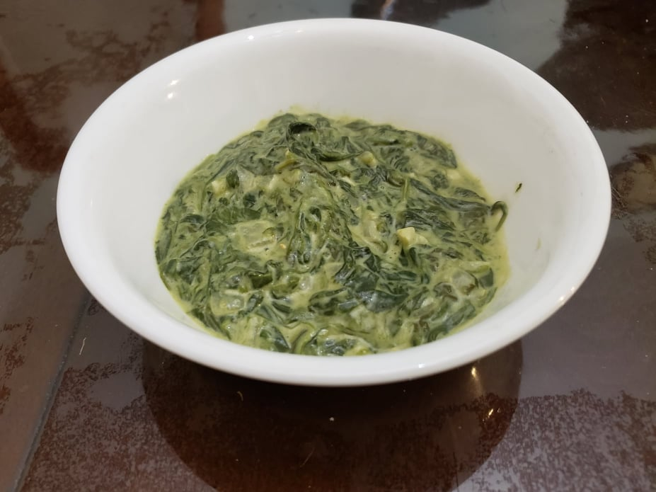

Creamed Spinach

Ingredients:
- 18 oz Baby spinach
- 2 tbsp Unsalted butter
- 1 Small onion, diced
- 2 cloves Garlic, minced
- 1/2 cup Milk
- 1/4 cup Heavy cream
- 4 oz Cream cheese
- Salt, to taste
- Black pepper, to taste
- 1/4 cup Grated parmesan
- Optional: 1/8 tsp Cayenne pepper
Instructions:
- In a large pan or saucepan over medium heat, melt butter. Add the onion and cook until soft, about 5 minutes. Then a dd garlic and cook for another 1 minute.
- Add milk, heavy cream, and cream cheese to the pan. Simmer until cream cheese is melted. Season with salt, pepper, and a pinch of cayenne.
- Fold in the spinach and parmesan. Continue to stir and cook until reduced to preffered thickness. Taste and adjust salt and pepper.